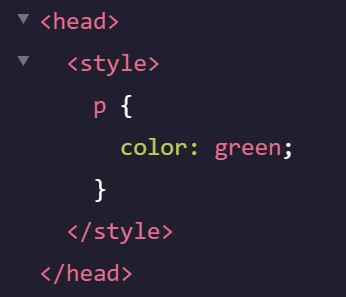

| CSS |
Ruleset |
Inline Style Attribute |
Internal Stylesheet |
| Element Selector |
*element name*{:;} |
Place in opening tag |
 |
| Declaration block/Attribute |
{ ???:???; } |
style='???:???;' |
| Declaration |
???:???; |
???:???; |
| Property |
???: |
=???: |
| Value |
:???; |
:???; |
CSS fundementals
- Link CSS file with HTML (link/href=''/rel='stylesheet') *put in the head element*
- Link externaly hosted fonts by placing the embed code in the head element and selecting the font-family in css
- Link self hosted fonts (@font-face {family-font: {FontName}; src: url('{relative path}') format('otf/ttp/woff/woff2'), url('{relative path}') format('truetype');})
- Type selector changes style of all of the same element (?{:;})
- Star selector to change all elements in one go (*{???})
- Class selector to change element/s (.???{}, class="??? ???") *Class attribute can have multiple values. Class selector overrides type selectors*
- ID selector to change single elements (#???{}, id="???") *id can only have single value. id value can only be used once per page. ID selectors overrides type/class*
- Importent Declaration value overrides everything (?{??:?? !important;})
- Attribute Selector to style elements which contain specific attributes ([???]{:;}), or which contain specific elements and attributes (???[??*='???'] {:;})
- Chaining will only change the style if the Type and Class selectors are met (?.??{:;}, class=?)
- Descendant Combinator will only target elements that are nested within other element/class (.??? ?? {:;},? class=>/?>)
- Multiple Selectors will change multiple element types using on CSS block (???, ??? {})
- Comment out in CSS (/* ?? */)
Visual Rules
- Coloured text (color)
- Style page beckground (background) ?
- Style an element's background colour (background-color)
- Font type (font-family) *place font name in 'quotes' if its more than one word*
- Font stack is a group of similar looking fonts. The browser will try the first, then second... (font-family: ???, ???;)
- Use Serif or Sans Serif as a fallback font if no other is available (???, serif;)
- Font Size (font-size: px;)
- Text boldness/thinness (font-weight: bold/bolder/lighter/normal/1-1000;)
- Italicize/Bolden an elements' text (font-style: italic/normal;)
- Make all of an elements' text capital (text-transform: uppercase/lowercase/capitalize;)
- Change bullet point type (list-style-type: circle/square/upper-roman/lower-alpha;)
- Bullet point image (list-style-image: url('sqpurple.gif');)
- Bullet/text wrap (list-style-position: inside/outside;)
- Bullet point style shorthand (list-style: type position image;
- Letter Spacing (letter-spacing: ??px/?.?em)
- Word Spacing (word-spacing: ??px/?.?em)
- Line height (line-height: ?.?/?%/??px/?.?em)
- Horizontal text alignment (text-align: left/center/right/justify) *it aligns left by default*
- Opacity (opacity: {0-1};)
- Set a background image (background-image: url('???');)
- Hide/show an element (visibility: hidden/visible/collapse;)
- Background size (background-size: contain/cover/%/px) ?
- Background position (background-position: center)?
- Vertical alignment (Vertical-align) ?
Border/Padding/Margin
- Width & Height of content (width/height: px/%;)
- Min & Max width (min-width/max-width)
- Min & Max height (min-height/max-height)
- Use overflow if content goes outside width/height boundries (overflow: scroll/visible/hidden)
- Border thickness/style/color (border: {width} {style} {color};) *default border settings: medium none color*
- Border radius (border-radius: px/%)
- Padding is the space between the content and the border (padding: px/%;)
- Independent Padding properties (padding-top:/padding-right:/padding-bottom:/padding-left:/)
- Padding shorthand (padding: {T R B L}/{T RL B}/{TB RL};)
- Margin is the space between the border and edge of element (margin)
- Independant Margin properties (margin-top:/margin-bottom:/margin-left:/margin-right:)
- Margin shorthand (margin: {T R B L}/{T RL B}/{TB RL};)
- Center horizontal margins (margin: 0 auto;) *Must be contained in parent element*
- *Vertical margin collapses to the higher margin, while horizontal margin doesn't*
- Reset the default margin & padding (margin: 0; padding: 0;)
- Type of box model a browser uses (box-sizing:) *Default is content box*
- Content box adds padding/margin/bonder onto width/height (content-box;)
- Border box subtracts padding/margin/bonder onto width/height (border-box;)
Pseudo-class selectors
- ???:hover, :focus, :visited, :disabled, :active, :before {}
Color
- #??????{?}
- rgb{a}(??, ??, ??{,?.?})
- hsl{a}(???, ??%, ??%{,?.?})
- { } is the opacity
Display/Positioning
- Position an element (position: ??)
- Set element to default position (static;)
- Move an element from its default position using top/right...(relative; top:/bottom:/right:/left: px/em/%;)*Won't affect neighboring elements*
- All other elements will ignore this element (absolute; top:/bottom:/right:/left: px/em/%;)*Won't affect neighboring elements*
- Element will be fixed to the page (fixed; top:/bottom:/right:/left: px/em/%;)
- Element will stick to the page after its offset properties (sticky; top:/bottom:/right:/left: px/em/%;)
- Display
- Inline value will diplay elements Inline (inline;) *em/strong/a are inline by default. Height/width can't be specified*
- Block displays element on new line (block;) *h1-h6/p/div/footer are block by default. Height/width can be specified*
- inline-block displays block element on same line (inline-block) *img is inline-block by default. Height/width can be specified*
- z-index brings element to the front when overlapping (z-index:)*default value is 0*
- Float move an element as far left/right as possible (float: right/left;) *Element must have width*
- Clear specifies how elements show display when they overlap when using the float (clear: left/right/both/none)
Flexbox
- One dimentional flex container block (Display: flex;)
- Inline multiple flexbox containers (display: inline-flex;)
- Position flex items on the X(main) axis (justify-content:)
- Flex items will be aligned left (:flex-start;)
- Items will be aligned right (:flex-end;)
- Item will be centered in flex container (:center)
- Items will have equal space around (:space-around)
- Items will have equal space between each other (:space-between)
- Position items on the Y(cross) axis (align-items:)*for aligning items withins a single row*
- Flex items will be positioned to top of container (:flex-start;)
- Items will be positioned to the bottom of container (:flex-end;)
- Item will be centered in flex container (:center)
- The bottom of all items will be aligned (:baseline;)
- Items will stretch from top to bottom (: stretch)*default. won't work if items have height/max-height*
- Position items on the Y axis (align-content:)*for aligning items on multiple rows*
- Flex items will be positioned to top of container (:flex-start;)
- Items will be positioned to the bottom of container (:flex-end;)
- Item will be centered in flex container (:center)
- Items will stretch from top to bottom (: stretch)
- Items will have equal space around (:space-around)
- Items will have equal space between each other (:space-between)
- Item width will expand items proportionately (flex-grow:) *place in flex items. Will not expand if has max-width. defaullt is 0*
- Items width will shrink proportionately (flex-shrink:) *default is 1. " min/max-width will override.*
- Set the starting width of flex items berfore stretch/shrink (flex-basis:) "
- Shrorthand: (flex: {flex-grow}{flex-shrink}{flex-basis};) "
- Change direction of items (flex-direction:)
- Order items in row left-to-right (:row;) *default*
- Order items in row right-to-left (row-reverse;)
- Order items verticaly top-to-bottom (:column)
- Order items verticaly top-to-bottom (:column-reverse)
- Will push the item to the next line (flex-wrap:)
- Will move items that don't fit to next line (:wrap;)
- Will move items to next line in decending order (:wrap-reverse)
- Won't move to next line (:nowrap) *default*
- Flex direction/wrap shorthand (flex-flow: {flex-direction} {flex-wrap};) *Place in parent container*
- P.S. When using flex direction it'll interchange Main axis with Cross axis
- Main axis properties:
- justify-content
- flex-wrap
- flex-grow
- flex-shrink
- Cross axis properties
- align-items
- align-content
Grid
- Two dimentional grid containter block (display: grid/inline-grid;)
- Set the number of columns and its width in a grid (grid-template-columns: ??px/%/fr ??px/%/fr;)
- Set the number of rows and its height in a grid (grid-template-rows: ???px/%/fr ??px/%/fr)
- Grid shorthand (grid-template: {rows}px/%/fr / {columns}px/%/fr))
- Set the width of impicit rows (grid-auto-rows: px/%/fr;)
- Set the width of impicit columns (grid-auto-columns: px/%/fr px/%/fr;)
- Define where implicit new items are added (grid-auto-flow: row/column/dense;) *row is default*
- Fraction measurements in grid (??fr;)
- Repeat value measurement in grid (: repeat(?, ??px/%/fr);)
- Set the minimum & maximum width/height of a row/column (; minmax(??px/%/fr, ??px/%/fr) ??;)
- Add gaps between grid columns (column-gap: px/%/fr;)
- Add gaps between grid rows (row-gap: px/%/fr;)
- Shorthand for grid gaps (gap: {row}px {column}px;)
- stretch item across multiple rows (grid-row-start: ?; grid-row-end: ?;) *place in grid items*
- " shorthand (grid-row: ? / span ?;)
- stretch item across multiple columns (grid-column-start: ?; grid-column-end: ?;)
- " shorthand (grid-column: span ? / ?;)
- Shorthand for grid rows & columns start & finnish (grid-area: {row-start} / {column-start} / {row-end} / {column-end};)
- You can use span to determine how many rows/columns to span (: ? / span ?;)
- Name sections of the page and place in grid item (grid-template-areas: "?? ????" "??? ???";)(grid-area: ???;)
- *Grid items can overlap, just set the z-index*
- Position items horizontally in grid container (justify-itmes: start/end/center/stretch;)
- Position items vertically in grid container (align-items: start/end/center/stretch;)
- Position the grid containter horizontally (justify-content: start/end/center/stretch/space-around/space-between/space-evenly;)
- Position the grid containter vertically (align-content: start/end/center/stretch/space-around/space-between/space-evenly;)
- Position items in grid container shorthand (place-items: {align-items} {justify-items};)
- Position the grid container shorthand (place-content: {align-content} {justify-content};)
- Position single items horizontally (justify-self: start/end/center/stretch') *overrides justify-itmes. Place in grid item*
- Position single items vertically (align-self: start/end/center/stretch') *overrides align-itmes. Place in grid item*
- Position single items shorthand (place-self: {align-self} {justify-self};) *Place in grid item*